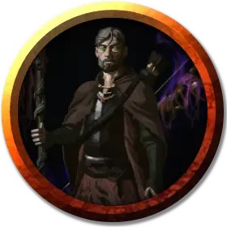

Барбатос
Barbatos
Средний Гуманоид (Человек), нейтрально-злой, именной НИП

Класс Доспеха 15 (проклёпанный кожаный доспех)
Хиты 78 (12к8 + 24)
Скорость 30 футов
| мод | спас | ||
|---|---|---|---|
| СИЛ | 11 | +0 | +0 |
| ЛОВ | 16 | +3 | +6 |
| ТЕЛ | 14 | +2 | +2 |
| мод | спас | ||
|---|---|---|---|
| ИНТ | 13 | +1 | +1 |
| МДР | 14 | +2 | +2 |
| ХАР | 10 | +0 | +0 |
Навыки Восприятие +5, Обман +3, Скрытность +6, Уход за животными +5
Сопротивление урону яд
Чувства пассивное Восприятие 13
Языки Общий
Опасность 6 (2300 опыта)
Бонус мастерства +3
Особенности
Плащ ржавого монстра. Любое немагическое оружие, изготовленное из металла, попадающее по Барбатосу, начинает разъедаться. После причинения урона оружие получает постоянный накопительный штраф −1 к броскам урона. Если этот штраф дойдет до −5, оружие будет уничтожено. Немагические боеприпасы, изготовленные из металла, попадающие по Барбатосу, уничтожаются после причинения урона.
Сердце тролля. Барбатос восстанавливает 10 хитов в начале своего хода. Если Барбатос получает урон кислотой или огнём, эта особенность не действует в начале его следующего хода. Барбатос умирает только если начинает ход с 0 хитов и не может регенерировать.
Использование заклинаний. Барбатос является заклинателем 6-го уровня. Его базовой характеристикой является Мудрость (Сл спасброска от заклинания 13, +5 к попаданию атаками заклинаниями). У него подготовлены следующие заклинания следопыта:
• 1-й уровень (4 ячейки): опутывающий удар [ensnaring strike], град шипов [hail of thorns], метка охотника [hunter's mark]
• 2-й уровень (2 ячейки): поиск животных или растений [locate animals or plants]
Действия
Мультиатака. Барбатос может совершить две атаки костяным коротким мечом.
Костяной короткий меч. Рукопашная атака оружием: +6 к попаданию, досягаемость 5 футов, одна цель. Попадание: 6 (1к6+3) колющего урона.
Лёгкий арбалет. Дальнобойная атака оружием: +6 к попаданию, дистанция 80/320 футов, одна цель. Попадание: 7 (1к8+3) колющего урона и цель должна совершить спасбросок Телосложения Сл 15, становясь отравленной на 1 час при провале. Если спасбросок провален на 5 и больше, то цель становится недееспособной. Цель становится дееспособной, если получит урон или если другое существо действием потрясёт цель.
Сметание плаща. Барбатос разъедает немагический объект из чёрного металла, который он может видеть в пределах 5 футов от себя. Если предмет не носят и не несут, прикосновение уничтожает его 1-футовый куб. Если объект носит или несёт существо, существо должно совершить спасбросок Ловкости Сл 12, чтобы избежать прикосновения Барбатоса.
Если объект, к которому прикасаются, представляет собой либо металлическую броню, либо металлический щит, который носят или несут, он получает постоянный и накопительный штраф -1 к предоставлемому от доспеха или щита КД. Доспех, КД которого упало до 10, или щит, бонус которого опустился до +0, уничтожаются. Если объект, к которому прикасаются, является металлическим оружием в руках, оно ржавеет, как описано в особенности Барбатоса «Плащ ржавого монстра».